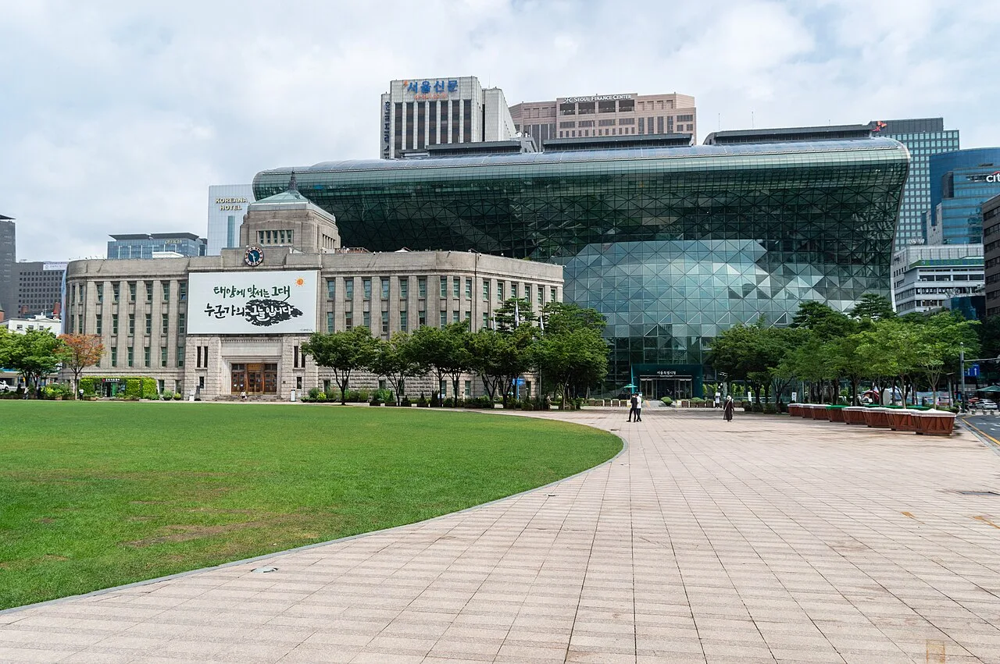
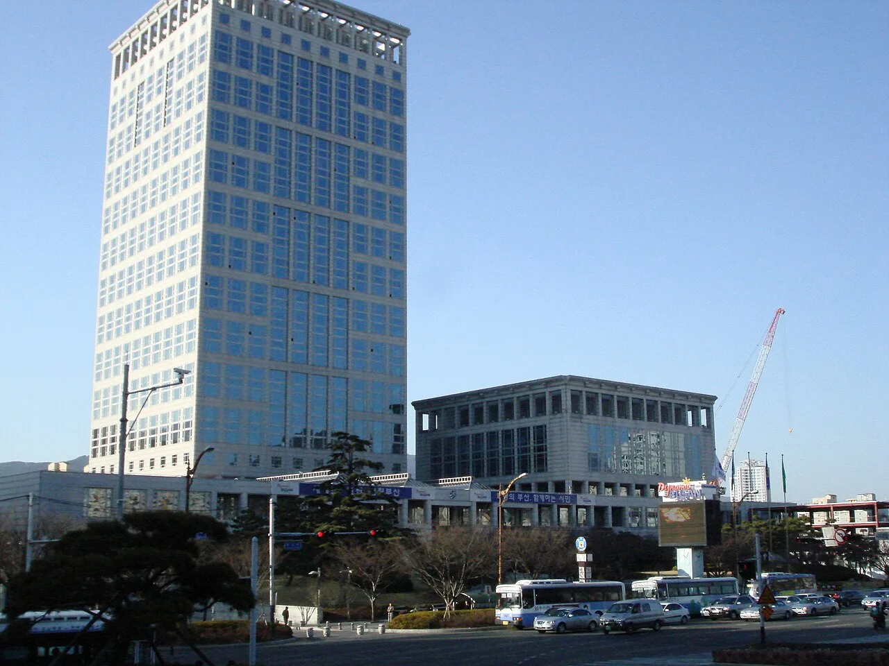

▲ 전기차 보조금은 국비와 지방비라는 두 개의 서로 다른 예산이 합쳐져 만들어진다 ⓒ CarPrism
"보조금 680만 원까지 나온다던데요." 전기차 상담을 받아본 사람이라면 한 번쯤 들어봤을 말이다. 그런데 이 숫자는 전국 어디서나 똑같이 나오는 금액이 아니다. 같은 차, 같은 트림이어도 등록하는 지자체가 어디냐에 따라 실제로 받는 총액이 수백만 원 차이 난다.
이유는 간단하다. 전기차 보조금은 국비와 지방비, 두 개의 다른 예산이 합쳐진 금액이기 때문이다. 국비는 전국이 같은 기준으로 산정되지만, 지방비는 시·도와 시·군·구가 각자 예산을 짜서 얹는 몫이다. 카프리즘이 2026년 기준 서울·경기·부산·대구·인천·광주·대전·울산·세종·제주 등 10개 지자체의 전기차 승용 보조금 공고를 직접 취합해 비교표로 정리했다.
1. 왜 지자체마다 보조금이 다른가
전기차 보조금이 지역마다 다르다는 사실 자체는 새롭지 않다. 하지만 "왜 다른가"를 물으면 의외로 답이 명확하지 않다. 답은 보조금이 하나의 예산이 아니라 두 개의 예산이라는 점에 있다.
환경부(2026년 기후에너지환경부)가 편성하는 국비는 차량의 배터리 성능, 1회 충전 주행거리, 충전 속도 등을 반영해 전국 공통 기준으로 산정된다. 반면 지방비는 각 시·도와 시·군·구가 자체 예산을 심의해 결정하는 몫이다. 지자체 재정 여건, 대기환경 정책 우선순위, 그리고 그해 편성한 물량(대수)에 따라 지방비 단가가 정해진다.
즉 국비는 전국이 사실상 같은 출발선이지만, 지방비부터는 지역별로 완전히 다른 계산이 시작된다. 이 지방비 격차가 실구매가 차이로 그대로 이어진다.

▲ 지방비는 국비와 달리 각 지자체가 자체 예산 심의를 거쳐 매년 따로 결정한다 ⓒ Tristan Surtel, Wikimedia Commons (CC BY-SA 4.0)
2. 국비와 지방비, 무엇이 다른가
국비는 전국 단일 기준이다. 2026년 기준 중형 전기 승용차 국비 최대 지원액은 580만 원 안팎으로 발표됐고, 여기에 3년 이상 된 내연기관차를 처분하고 전기차로 바꾸는 경우 전환지원금 최대 100만 원이 국비로 추가된다. 다만 이 국비 액수는 차량의 주행거리·충전속도·에너지밀도 등 성능 계수에 따라 차등 지급되므로, 같은 "최대"라도 모델마다 실제 받는 금액은 다르다.
지방비는 이야기가 완전히 다르다. 같은 광역단체 안에서도 기초단체(시·군·구)별로 액수가 갈리고, 광역단체 간에는 차이가 더 크다. 예를 들어 세종시는 시비 80만 원 수준을 얹는 반면, 인천이나 제주는 지방비만 400만 원 안팎에 이른다. 지방비 하나만 놓고 보면 5배 가까운 격차가 존재하는 셈이다.
📍 전환지원금도 지자체마다 다르다
내연기관차 처분 후 전기차로 갈아탈 때 붙는 전환지원금도 국비(최대 100만 원)에 지자체가 시비·도비를 더 얹는 구조다. 서울·부산은 시비 30만 원을 더해 최대 130만 원, 제주는 폐차 시 최대 150만 원까지 지원한다. 이 항목까지 합치면 지역 간 총액 차이는 더 벌어진다.
3. 주요 지자체별 전기차 보조금 비교표 (2026년 9월 기준, 승용)
카프리즘이 각 지자체의 2026년 공고와 언론 보도를 직접 취합해 승용 전기차 기준 국비+지방비 합산 최대 지원액을 정리했다. 아래 수치는 2026년 9월 기준으로 취합한 것이며, 지자체 보조금은 추경 편성이나 예산 소진에 따라 수시로 바뀌므로 실제 지급액은 차량 성능과 접수 시점에 따라 달라진다. 표는 어디까지나 "최대치 기준의 지역 간 비교" 용도로 참고하는 것이 정확하다.
| 지자체 | 합산 최대 지원액 | 비고 |
|---|---|---|
| 서울 | 754 | 시비는 국비의 약 30% 산정, 승용 10,500대 보급 |
| 경기(화성·평택 등 상위 시군) | 약 980 | 도비 100 고정 + 시·군비 최대 300, 시군별 편차 100~400 |
| 부산 | 754 | 청년 대상(생애 첫차·출산·취업) 최대 150 별도 추가 |
| 대구 | 842 | 3차 추경 173억 투입, 물량 1,060→2,757대로 확대 |
| 인천 | 1,000 이상 | 인천시 지방비만 최대 400, 10개 지자체 중 최고 수준 |
| 광주 | 910 | 승용 1,930대·화물 330대 등 총 2,279대 지원 |
| 대전 | 754 | 내연차 전환지원금 최대 130 신설, 별도 가산 |
| 울산 | 893 | 351억 원 예산 소진 두 차례, 500대 추가 공급 |
| 세종 | 660 | 10개 지자체 중 최저권, 우선지원 물량 35~50% 별도 배정 |
| 제주 | 980 | 도비 400 고정이나 수요 폭증으로 상반기 예산 사실상 소진 |
📍 표에 없는 지역은 어떨까 — 경남을 더 확인해봤다
이번 비교 대상 10개 지자체 외에 경상남도도 함께 확인해봤다. 경남은 2026년 전기차 보급 예산으로 1,353억 원을 편성해 승용 1만 5,140대를 포함해 총 1만 9,251대를 지원하는데, 승용 전기차 국비+지방비 합산 최대 지원액은 754만 원으로 서울·부산·대전과 같은 수준이다. 즉 경남처럼 지방비를 국비의 일정 비율로 산정하는 지자체가 많아, 표에 없는 지역도 상당수는 754만~900만 원대에 수렴하는 편이다. 다만 시·군별로 추가 지방비를 편성하는 곳도 있으므로 정확한 금액은 거주지 공고문을 확인해야 한다.
지역별 실시간 잔여 물량과 정확한 차종별 금액은 무공해차 통합누리집에서 확인할 수 있다. 무공해차 통합누리집 지자체별 보조금 조회 바로가기

▲ 제주는 도비 400만 원을 유지했지만 수요가 폭증하며 상반기 예산이 예상보다 빨리 바닥났다
4. 왜 어떤 지역은 많이 주고, 어떤 지역은 적게 줄까
지방비 격차의 배경에는 크게 세 가지 요인이 겹쳐 있다.
✅ 지방비가 갈리는 세 가지 요인
· 인구밀도·수요 압력 — 서울·부산처럼 신청 대수가 원래 많은 대도시는 1대당 지방비를 낮게 잡아야 더 많은 사람에게 나눠줄 수 있다. 반대로 인구가 적은 지역은 대당 지원액을 높여도 총예산 부담이 크지 않다
· 재정자립도 — 인천·경기 상위 시(화성·성남·수원 등)처럼 지방세수가 풍부한 지자체는 지방비를 더 두텁게 편성할 여력이 있다. 세종처럼 상대적으로 재정 규모가 작은 지자체는 지방비 비중이 낮게 유지된다
· 지역 특성과 정책 우선순위 — 제주는 이미 전기차 보급률이 전국 최상위권이라 도비를 고정 수준으로 유지해도 신청이 몰려 조기 소진되는 반면, 울산·대구처럼 대기오염 저감이 시급한 산업도시는 추경까지 동원해 물량을 늘리는 경향이 있다

▲ 대도시일수록 신청 대수가 많아 대당 지방비를 낮게 잡는 경향이 나타난다 ⓒ Rémi Cormier, Wikimedia Commons (CC BY-SA 3.0)
📍 "보조금 많은 지역"이 항상 유리하지는 않다
지방비가 높은 지역(인천·경기 상위 시군·제주)은 단가는 후하지만 물량 자체가 적어 조기 소진 위험도 함께 크다. 실제로 제주는 도비 400만 원을 유지하고도 상반기 안에 예산이 바닥났다. 반대로 서울·부산·대전처럼 지방비가 상대적으로 낮은 지역은 물량을 넓게 배정해 접수 기회 자체는 더 오래 열려 있는 편이다. 즉 "최대 금액"과 "실제로 받을 확률"은 별개의 문제다.
5. 신청할 때 반드시 확인해야 할 것들
지자체 간 비교표를 봤다고 끝이 아니다. 실제 신청 단계에서는 지역마다 절차와 리스크가 또 다르다.
✅ 신청 전 체크리스트
· 선착순 마감 여부 — 대부분의 지자체가 선착순 접수이며, 예산 소진 시 조기 마감된다. 울산은 2026년에만 예산이 두 차례 동났고, 제주도 상반기 안에 사실상 소진됐다
· 출고 기한 — 지원 대상으로 선정된 뒤 통상 2개월 안팎의 출고 기한이 붙는다. 이 기한을 넘기면 대상에서 제외될 수 있다
· 이의신청 절차 — 신청이 반려되거나 순위에서 밀렸을 때는 해당 지자체 담당 부서에 이의신청 또는 재심의를 요청할 수 있다. 접수 창구와 기한은 지자체 공고문에 명시돼 있다
· 추가 공고 가능성 — 추경 편성이나 미출고 반납 물량이 생기면 2차·3차 공고가 나오기도 한다. 대구와 울산이 2026년에 실제로 추가 물량을 풀었다
· 우선지원 대상 여부 — 세종처럼 물량의 35~50%를 장애인·차상위계층·다자녀 등 우선지원 대상에게 별도 배정하는 지역도 있으므로, 해당 여부를 먼저 확인하는 편이 유리하다
실시간 잔여 물량과 지자체별 문의처는 무공해차 통합누리집에서 확인할 수 있다. 지자체 문의처 및 보조금 지급여부 확인 바로가기
6. 요약
전기차 보조금은 국비와 지방비, 두 개의 다른 예산이 합쳐진 금액이다. 국비는 전국이 같은 기준을 쓰지만, 지방비는 지자체가 각자 예산을 편성하기 때문에 지역 간 격차가 크다. 2026년 기준으로 보면 세종(660만 원)이 가장 낮은 축이고, 인천·경기 상위 시군·제주(980만~1,000만 원대)가 가장 높은 축이다.
다만 지방비가 높다고 무조건 유리한 것은 아니다. 단가가 높은 지역일수록 물량이 적어 조기 소진 위험도 크고, 대도시는 물량이 많은 대신 대당 지방비가 낮게 잡히는 경향이 있다. 내가 등록할 지자체의 공고문을 직접 확인하고, 선착순 마감·출고 기한·우선지원 대상 여부까지 함께 따져봐야 실제로 받을 수 있는 금액을 정확히 알 수 있다.